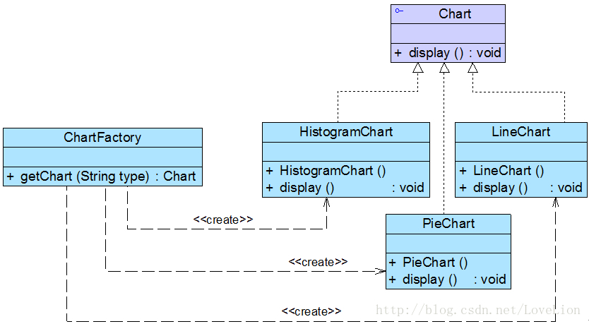

为了将Chart类的职责分离，同时将Chart对象的创建和使用分离，Sunny软件公司开发人员决定使用简单工厂模式对图表库进行重构，重构后的结构如图2所示：

图2 图表库结构图
在图2中，Chart接口充当抽象产品类，其子类HistogramChart、PieChart和LineChart充当具体产品类，ChartFactory充当工厂类。完整代码如下所示：
- //抽象图表接口：抽象产品类
- interface Chart {
- public void display();
- }
-
- //柱状图类：具体产品类
- class HistogramChart implements Chart {
- public HistogramChart() {
- System.out.println("创建柱状图！");
- }
-
- public void display() {
- System.out.println("显示柱状图！");
- }
- }
-
- //饼状图类：具体产品类
- class PieChart implements Chart {
- public PieChart() {
- System.out.println("创建饼状图！");
- }
-
- public void display() {
- System.out.println("显示饼状图！");
- }
- }
-
- //折线图类：具体产品类
- class LineChart implements Chart {
- public LineChart() {
- System.out.println("创建折线图！");
- }
-
- public void display() {
- System.out.println("显示折线图！");
- }
- }
-
- //图表工厂类：工厂类
- class ChartFactory {
- //静态工厂方法
- public static Chart getChart(String type) {
- Chart chart = null;
- if (type.equalsIgnoreCase("histogram")) {
- chart = new HistogramChart();
- System.out.println("初始化设置柱状图！");
- }
- else if (type.equalsIgnoreCase("pie")) {
- chart = new PieChart();
- System.out.println("初始化设置饼状图！");
- }
- else if (type.equalsIgnoreCase("line")) {
- chart = new LineChart();
- System.out.println("初始化设置折线图！");
- }
- return chart;
- }
- }
编写如下客户端测试代码：
- class Client {
- public static void main(String args[]) {
- Chart chart;
- chart = ChartFactory.getChart("histogram"); //通过静态工厂方法创建产品
- chart.display();
- }
- }
编译并运行程序，输出结果如下：
在客户端测试类中，我们使用工厂类的静态工厂方法创建产品对象，如果需要更换产品，只需修改静态工厂方法中的参数即可，例如将柱状图改为饼状图，只需将代码：
chart = ChartFactory.getChart("histogram"); |
改为：
chart = ChartFactory.getChart("pie"); |
编译并运行程序，输出结果如下：